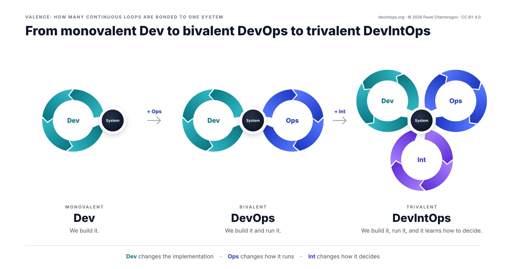

DevIntOps
Explore the model

Diagram text: what each of the twelve stages does
- Plan
- Turn goals and evidence into a roadmap and specs.
- Code
- Implement the change, with agents and people in one repo.
- Build
- Turn code into deployable artifacts, automatically.
- Test
- Check the change works before anyone depends on it.
- Release
- Package a tested build into a versioned release, ready to ship.
- Deploy
- Roll out step by step through rings and feature flags.
- Operate
- Keep the system available, scaled and within budget.
- Monitor
- Watch real behavior: telemetry, errors and user signals.
- Understand
- Read goals, context and outcomes: what is asked, known and unclear.
- Predict
- Weigh options, including no action, and select one within the limits.
- Orchestrate
- Send each decision to the stage or agent allowed to act on it.
- Learn
- Compare expected with actual and keep, revise or retract the lesson.
We are not just adding AI to the software development lifecycle.
We are adding intelligence to the lifecycle of software itself.
- A retry loop converges one task. A learning loop makes the next task start better.
- Every task starts from the same defaults. Without the third loop, nothing compounds.
- A loop that only ever adds checks has learned to say no, not to decide better.
Why a third loop
Many agentic SDLC proposals put an AI agent into every box of the DevOps figure-eight. A coding agent writes, a review agent reviews, a test agent validates, and when a check fails the work goes back until it passes. That is useful, and it is still the same loop, only faster. DevOps has always valued feedback and learning; what these diagrams lack is a loop that carries experience into the next task and checks that it helped.
That is the third loop. With memory and judgment at its core, it turns outcomes into lessons: an escaped bug becomes a scoped review rule, a rollout pattern with a clean record becomes the default, a check that never fires is proposed for retirement. Each change goes through the stage's own rules, evals or context, with the owner's approval, and stays only while the evidence says it pays off. It is a step toward software that improves itself, while people keep the goals, the permissions and the scoring.

In chemistry, valence is the number of bonds an atom can form. Two bonds only make chains and rings; branching starts at three. Here it is a metaphor, not a law. Software engineering has added a valence twice already, and each step kept everything before it: DevOps did not remove development, and DevIntOps does not remove DevOps.
The model at a glance
| Development | Operations | Intelligencenew | |
|---|---|---|---|
| Stages | Plan → Code → Build → Test | Release → Deploy → Operate → Monitor | Understand → Predict → Orchestrate → Learn |
| Continuous processes | Integration, Delivery | Deployment, Feedback | Reasoning, Adaptation |
| Core | flow and quality | stability and observability | memory and judgment |
| Unit of work | a change | a release, an incident | an outcome in, a lesson out |
| Metric | lead time, task completion | change failure rate, incident rate, time to restore | time to lesson, payoff per lesson |
| Without it | nothing ships | nothing survives production | nothing compounds |
Is your system trivalent?
Six questions from the paper. Answer them for one team or one system you know well. A yes should point to an example, an owner or an artifact, not a tool name.
- After an escaped bug or an unusually good result, does the loop propose a change to some stage, or record why nothing should change?
- Does task N+1 avoid task N's mistake, or repeat its success, because the system carried the lesson?
- Does a named owner, not the loop itself, decide how lessons are judged and what they may change?
- Does each lesson say what it should change and by when, and do you check that against a baseline, for example the repeat rate per failure class?
- Do lessons and their evidence live in a versioned store, linked to the decision state they change, not only in people and documents?
- Do lessons expire unless renewed, and can a wrong one be retracted everywhere it is used?
Vocabulary
How the paper uses these terms.
Show all 22 terms
- DevIntOps
- Development, Intelligence and Operations: three continuous loops bonded to one system. Int stands for Intelligence.
- Intelligence
- The third loop: Understand, Predict, Orchestrate, Learn. The word means learning from experience to decide better, not a claim that any model is intelligent.
- Valence
- A metaphor: the number of continuous loops bonded to one system, one for Dev, two for DevOps, three for DevIntOps.
- Loop
- A continuous cycle with its own unit of work, clock, owner and metric. Development, Operations and Intelligence are the three.
- Stage
- One step of a loop, such as Plan, Deploy or Learn. There are twelve, four per loop.
- Continuous process
- A practice drawn between two neighboring stages, such as Continuous Integration. The label marks its main area of responsibility; the practice itself can span more stages. There are six, two per loop.
- Engineering system
- How we build and run software: the repositories, pipelines, agents, people and rules. The paper's main application.
- Product system
- What we build: the running product and the decisions it makes for its users. Its loops have their own owners and memory.
- Outcome
- Anything a decision led to, including a decision not to act: an escaped bug, an incident, a flaky verdict, a review comment accepted or dismissed, a rollback, a cost spike, user feedback, a change that went better than expected.
- Outcome class
- A stable, versioned category that people define, so that similar outcomes can be compared over time. A failure class is the most common kind.
- Failure class
- An outcome class for one kind of failure, such as unchecked optional in retry code. People define and version the classes, not the loop.
- Lesson
- A scoped, versioned bet about a named class of outcomes: usually that a change in some stage will improve it, sometimes that no change is justified. The class can be a failure that should stop coming back, waste to remove, or a result worth repeating. Its record names the trigger and sources, the evidence, the expected effect and its check date, the owner and when it expires. It can be wrong, so it can be retracted.
- Decision state
- What the stages apply when they make judgment calls: an agent's instructions and context, review rules, gate thresholds, rollout speed, decision policies. It is versioned like any other code or config. Intelligence changes it; memory records why.
- Memory
- Versioned, provenance-tracked experience, knowledge, preferences, evidence and policies, within permission scopes. In the engineering application, the lesson records and their evidence; lessons reach the stages as decision state. Not a wiki. If the loop goes down, the stages keep their last lessons, and each lesson carries its own expiry date, so it still expires on time.
- Judgment
- Weighing options and selecting one, including no action, within owner limits.
- Owner
- The named team or role that owns a loop, its memory and its learning metric. Stage owners keep a veto over writes to their stage.
- Payoff
- What a lesson changed in its class of outcomes, against a baseline, with its attribution and uncertainty stated: repeats for a failure class, time or compute saved for waste, cycle time for flow, cost per task for spend.
- Repeat rate
- How often a failure class comes back, per comparable exposure, in a fixed window. Against a baseline, it measures the payoff of a lesson about that class.
- Time to lesson
- From a recorded outcome to a lesson live in the owning stage, at the evidence level its authority needs, or to an explicit decision to change nothing.
- Cost of learning
- What the loop spends to learn: compute, reviewer time, false positives and dismissed comments, upkeep of the lessons it keeps, and rollbacks when a lesson goes wrong.
- Calibration
- How well the loop's stated confidence matches what happened: of the bets it calls 80% likely, about 80% should come true. A check on confidence, read next to payoff and cost.
- Compounding
- Later work starting from what earlier work taught, instead of learning it again. It lasts only while kept lessons return more than they cost to keep.
Versions and source
The paper From Monovalent Dev to Bivalent DevOps to Trivalent DevIntOps is a draft, dated 18 October 2026. When it becomes version 1.0 it keeps this address; each later version gets its own address and its own row here.
| Version | Date | Address | |
|---|---|---|---|
| DRAFT | devintops.org/v1/ |
Discussion
Questions, objections, counterexamples and reports from teams that try the model are welcome. The thread lives in GitHub Discussions and is shared with the paper's page; sign in with GitHub to post. Found an error in the text? Open an issue.
To follow new versions, watch or star the repository on GitHub.
If the comments don't load, read and post on GitHub.